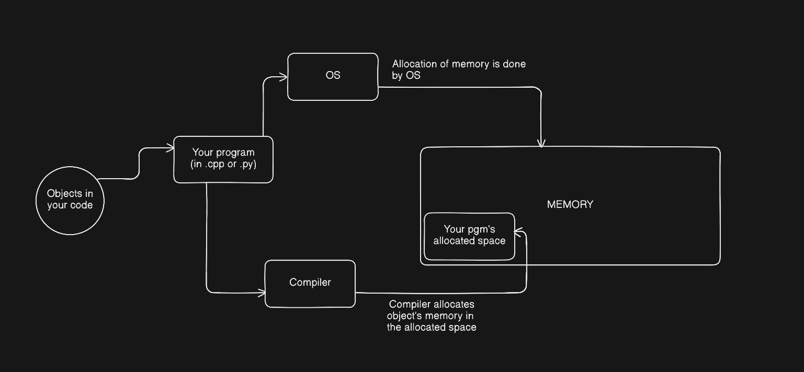

Data Representation in computers
Overview
When you call int x = 0; in your code, where and how is that x stored? This is the question that I wanted to know the answer of. And in this essay, we’ll look at just that.
And
Why should you care?
As we will understand later in the article, there are issues and subtle bugs that come when programmers don’t understand their code. Hackers want to figure out ways to exploit those bugs and gain entery into people’s systems. So knowing how, why, and where of your data, in your system is not only useful, I’d say it’s necessary.
bits, bytes and objects
The smallest unit of storage is a bit. A single bit, as you can guess, is not that useful in isolation. A byte is a much better unit to start looking at interesting patterns bits can produce. A byte is a (typically) 8-bit storage unit. A byte’s range in different notations:
- 00000000 to 11111111 in binary
- 0 to 255 in decimals
- 00 to FF in hex.
Computer memory is just a very big array of bytes. Put simply, every object that you create in your code is stored somewhere on this (VERY BIG) array and has it’s subsequent address which you can see using pointers.
what is an object?
Objects are region in memory space that can hold value, for example: 12. Something to know about objects is this: a. objects memory is a contigous block allocation b. objects never overlap.
Example: say you have int x which is a 4 byte integer at address 0x100.
Then you can safely say that 0x100, 0x101, 0x102 and 0x103 are storing that integer.
Till this point, the knowledge was programming language independent. From here on, since I am more interested in C and C++ and they’re more closer to machine level code (see my prev article on how code goes from source code to machine instructions) , we’ll look at how objects are created and stored in C and C++.
Exploiting memory
In C and C++, by looking at memory, you can’t always tell what sort of an object is stored there. And this lets tricksters play games by exploiting memory.
- an object may have aliases, for example:
int x = 0;
int* pt = &x;
here x and pt refer to the same object in memory.
lifetime of an object
Lifetime of an object is basically when in time was the object destroyed minus when was it initiated in the program. They are important for us to understand because they’re used to define, undefined behaviour in programming languages.
#include"print_bytes.hh"
char ch1 = 'A';
const char ch2 = 'B';
void f() {
char ch3 = 'C';
char* ch4 = new char{'D'};
print_object(ch1);
print_object(ch2);
print_object(ch3);
print_object(*ch4);
}
They are of three types of lifetimes:
- STATIC := the object lasts as long as the program runs. (global variables, ie ch1, ch2)
- DYNAMIC := the programmer allocates and deallocates the memory manually (ex: *ch4)
- AUTOMATIC := the compiler does the allocation of memory based on the memory space of the object (which is also called scope of the object). (ex: ch3)
Segments
Here’s what happens:
OS - gives a program memory space
Compiler - allocates memory to objects in the program

A program’s address space is divided into segments.
Which object will go in which segment is decided on the basis of the lifetime of the object.
Main segments are:
- Code: text only data. static lifetime. Describes instructions, and has global constants. Unmodifiable.
- Data: contains non-constant global variables, can be modified, static lifetime.
- Stack: automatic lifetime, modifiable.
- Heap: dynamic lifetime, modifiable.

types of data representation
Fundamental types of data as described in the book are as follows:
unsigned int
This is just basic positive integers. Ex: 11.
The good question is, how do you store multi-byte variables in memory.
Question: since one byte’s max number is 255, how do you store 258?
And it’s the job of compiler to decide exactly that.

-
This is the process of allocating memory to a multi-byte integer.
-
write the integer in hex format including all the leading zeroes for satisfying the type size. ex: For example, the
unsignedvalue 65534 would be written0x0000FFFE. -
break the hex into component bytes. In our example, they are, from most to least significant, 0x00, 0x00, 0xFF, and 0xFE.
-
Using the little-endian representation:
- 0x30: 0xFE 0x31: 0xFF 0x32: 0x00 0x33: 0x00
-
signed int
computers use - two’s complement to represent signed integer.
Question to think: how do you store -132 in binary?
What happens is this:
- we look at the MSB (most significant bit) of the binary number.
- if it is a zero, no problem. It’s a positive integer.
- if it is a one, then that is a negative integer.
to process that negative byte, flip all the bits, add 1 and put a minus sign in front. That is your negative integer.
Now, why this works? This works because signed and unsigned representations yield the same result in addition, subtraction and in multiplication. (For proof, look at the reference article down below!)
arrays
- memory of an array is stored sequentially as discussed earlier.
Assume a declaration like T x[N], where x is an array of N objects of type T, and say that the address of x is a. Then the address of element x[i] equals a + i * sizeof(T), and sizeof(a) == N * sizeof(T).
sidebar: vectors
What vectors are, are arrays that can shrink and grow. It has dynamic lifetime at runtime.
sizeof(v) = 24.
Here’s how the memory is represented of vectors having 24 bytes size:
- the first 8 bytes store begin address of the vector. Address of the first element of the vector == begin address. [Same as
v.data()] - the next 8 bytes store end address of the vector. Address of the last element of the vector. [same as
&v.data()[v.size()]] - the next 8 bytes are the capacity address bytes. they grow and shrink as needed.
alignment
Data alignment is positioning data in memory in a multiples of some numbers (ex: 2, 4, 8 bytes). This helps with optimizations. Say if there was no data alignment, one byte of your integer would be at 0x100 and the other could be at, god knows where! And we would have to go through the random access path, which we know is not that efficient! That’s why compiler takes the reponsibility to pad integers.
struct val{
int x; // offset 0
char l; // offset 4, padded 3 bytes.
} val;
Uninitialized objects?
Uninitialized objects are kept based on their lifetimes:
- if it’s a static, then it’s value is made 0. (ex;
int global) - if it’s dynamic, then its value is not initialized and accessing it before init will lead to undefined behaviour.
Thank you for reading. If you did, that is. 🙂
References
CS61 Notes :CS61 notes on data representation (ABSOLUTELY WORTH A READ !!) :Computer System: A Programmer’s Perspective (Book) [maybe a bit too much if you don’t have the patience]